Зал по плану, а не наугад.
Программа тренера в телефоне и на часах. Подход — одно касание, а вес на следующий приложение подберёт по вашему самочувствию.
- Бесплатно
- Без рекламы и подписок
- Вход по коду из письма
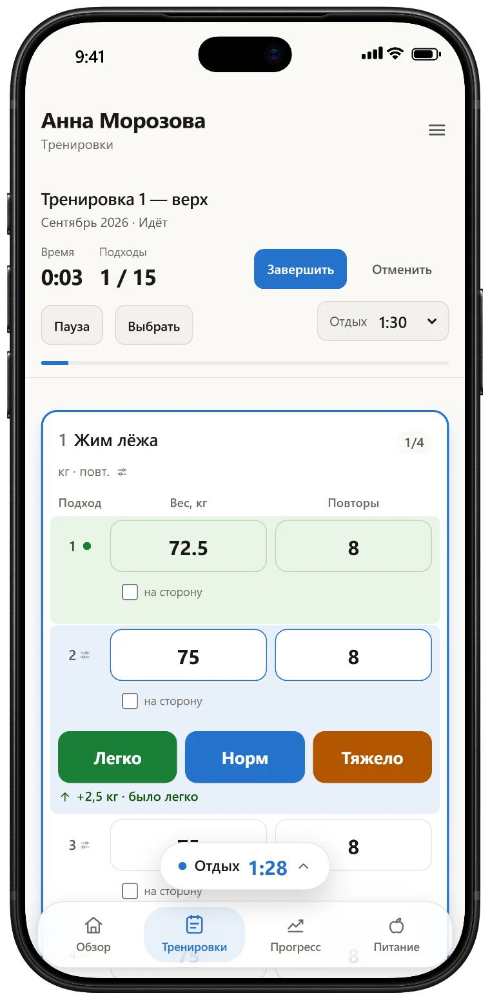
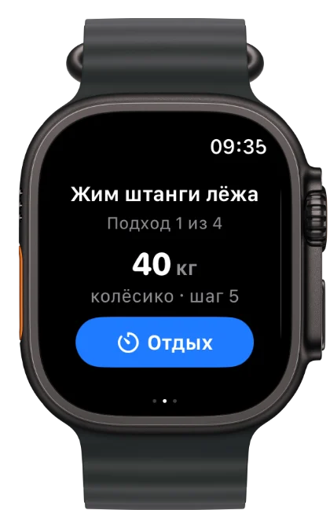
+2,5 кг было легко — следующий подход тяжелее
Было легко — вес вырастет сам.
Вместо галочки у каждого подхода три кнопки. Приложение помнит, сколько вы поднимали в прошлый раз, и двигает вес следующих подходов. Отдых запускается сам.
Попробуйте — отметьте подход.
Следующий подход72,5 кг
Отметьте, как прошёл подход
Отдых1:30
Телефон можно не доставать.
Apple Watch показывает упражнение, вес и отдых. Вес подкручивается колёсиком, подход отмечается на запястье, тренер видит его сразу.
Пульс и калории остаются на часах и в «Здоровье» — тренеру и на сервер они не уходят.
- Вес колёсиком
-
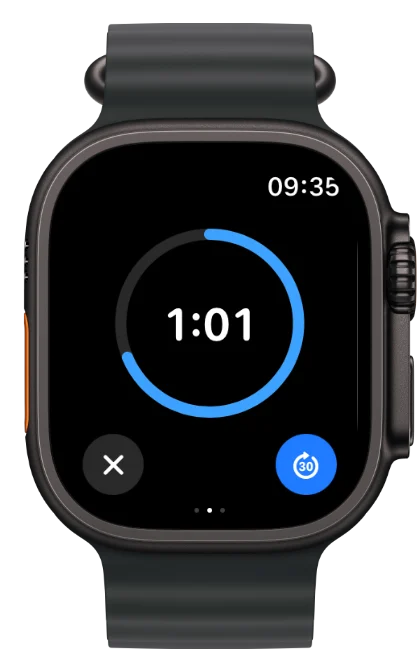
Отдых на весь экран -
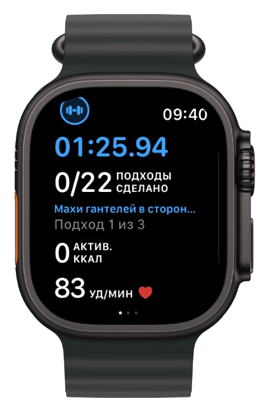
Пульс и подходы
Зеркало врёт. График — нет.
Итоги недели, рекорды, карта мышц и вес на графике. Видно, что работа в зале не проходит даром.
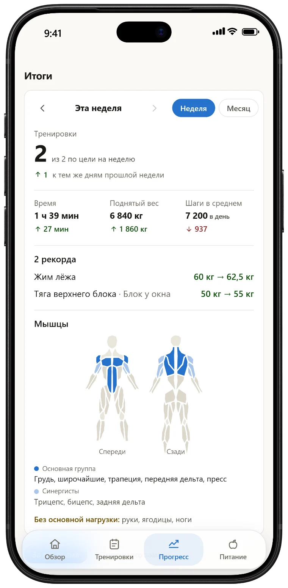
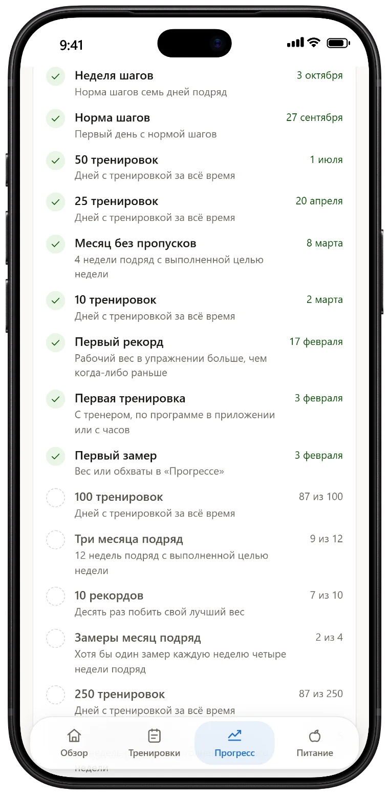
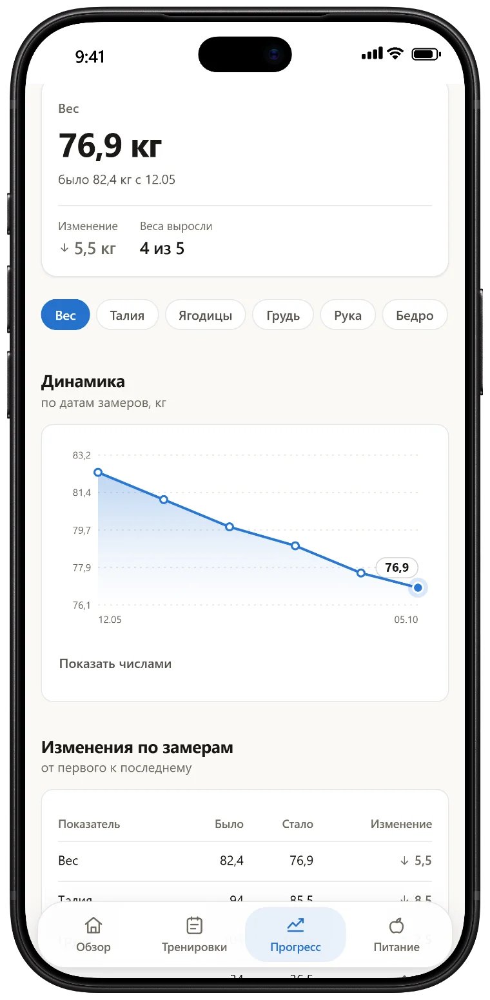
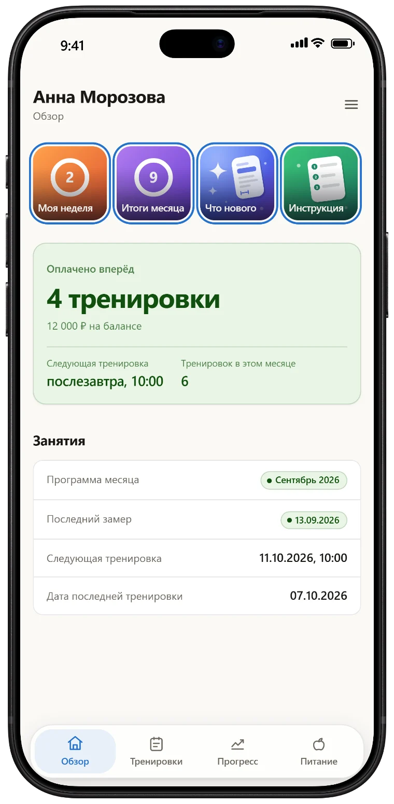
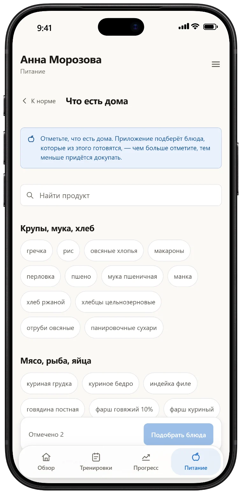
С тренером или сам.
С тренером
- Программа на месяц от тренера
- Тренер видит каждый подход и замер
- Пожелание к программе своими словами
- Расписание и баланс оплаченных занятий
Сам
- Свободная тренировка с таймером отдыха
- Шаги и тренировки из «Здоровья» и Health Connect
- Рацион из того, что есть дома
- Серии, награды и рекорды
Кабинет можно завести самому, а к тренеру привязаться позже — только с вашего согласия.
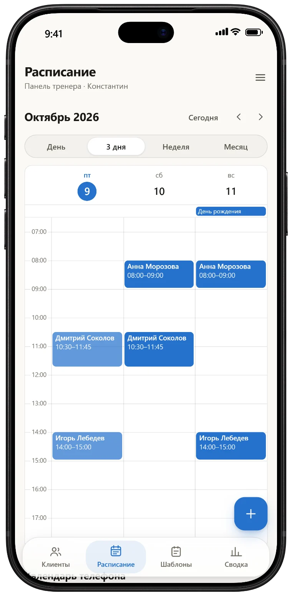
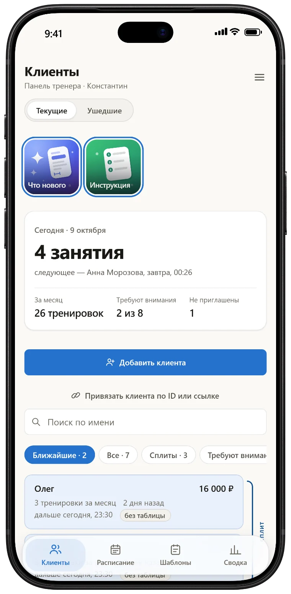
Тренеру — без таблиц.
Клиенты, программы, расписание и оплаты в одном месте. Баланс занятий считается сам — из расписания и оплат, без споров о долге.
- Программа из шаблона
- Библиотека тренировок и упражнений, сплиты, программа на месяц в пару касаний.
- Журнал клиента
- Каждый подход с весом, повторами и оценкой — сразу после тренировки.
- Расписание со списанием
- Проведённое занятие само списывается с оплаченного пакета.
- Глазами клиента
- Открыть приложение так, как его видит клиент, и вернуться в свою панель.
Самостоятельная регистрация тренеров скоро откроется. Хотите вести клиентов в Fit Track одним из первых — напишите.
Написать о подключенииСколько стоит?
Занятия вы оплачиваете тренеру, как и раньше. Приложение только считает, сколько тренировок осталось.
0 ₽
Без рекламы, подписок и встроенных покупок
- Тренировки, часы и таймер отдыха
- Прогресс, награды и замеры
- Рацион из того, что есть дома
- iPhone, Apple Watch, Android и браузер
Вопросы
Нужен ли тренер?
Нет. Кабинет можно завести самому по почте и заниматься со свободной тренировкой. Если появится тренер, он пришлёт ссылку, и вы привяжетесь к нему с согласия — история тренировок останется.
Как войти?
По почте, без пароля: приложение пришлёт код в письме. Клиент тренера может войти и по его ссылке.
Где хранятся мои данные?
На сервере в Москве. Тренировки и замеры видите вы и ваш тренер, для рекламы они не используются и никому не продаются. Подробно — в политике конфиденциальности.
Есть ли версия для Android?
Да: приложение для Android можно скачать с этой страницы, шаги и тренировки оно берёт из Health Connect. Карточка в Google Play готовится. Без установки Fit Track работает в браузере.
Какие нужны часы?
Приложение для часов — на Apple Watch. С Android шаги и тренировки с часов приходят через Health Connect.
Как удалить аккаунт?
В приложении: «Настройки», последний пункт — «Удалить аккаунт». Данные удаляются вместе с ним. Перед этим можно скачать их копию.
Начните со следующей тренировки.
Как поставить на Android или добавить на экран «Домой» — инструкция по установке.